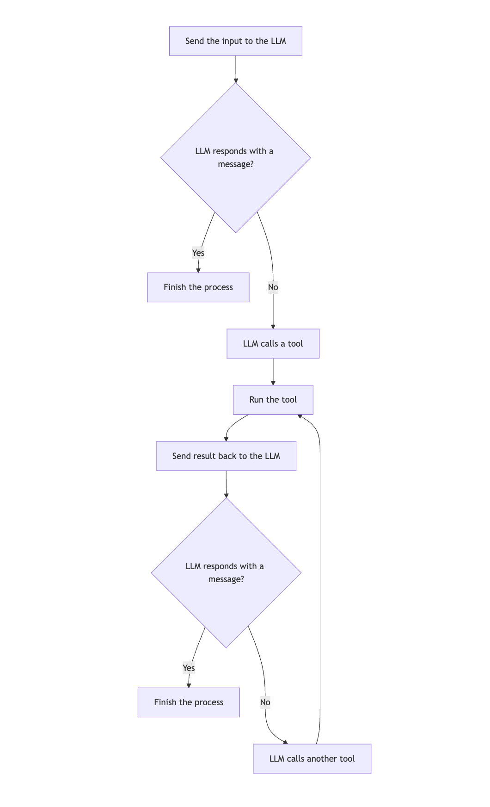

Custom strategy graphs
Strategy graphs are the backbone of agent workflows in the Koog framework. They define how the agent processes input, interacts with tools, and generates output. A strategy graph consists of nodes connected by edges, with conditions determining the flow of execution.
Creating a strategy graph lets you tailor the behavior of an agent to your specific needs, whether you are building a simple chatbot, a complex data processing pipeline, or anything in between.
Strategy graph architecture
At a high level, a strategy graph consists of the following components:
- Strategy: the top-level container for the graph, created using the
strategyfunction. - Subgraphs: sections of the graph that can have their own set of tools and context.
- Nodes: individual operations or transformations in the workflow.
- Edges: connections between nodes that define transition conditions and transformations.
The strategy graph begins at a special node called nodeStart and ends at nodeFinish.
The path between these nodes is determined by the edges and conditions specified in the graph.
Strategy graph components
Nodes
Nodes are building blocks of a strategy graph. Each node represents a specific operation.
The Koog framework provides predefined nodes and also lets you create custom nodes by using the node function.
For details, see Predefined nodes and components and Custom nodes.
Edges
Edges connect nodes and define the flow of operation in the strategy graph.
An edge is created using the edge function and the forwardTo infix function:
Conditions
Conditions determine when to follow a particular edge in the strategy graph. There are several types of conditions:
| Condition type | Description |
|---|---|
| onCondition | A general-purpose condition that takes a lambda expression that returns a boolean value. |
| onToolCall | A condition that matches when the LLM calls a tool. |
| onAssistantMessage | A condition that matches when the LLM responds with a message. |
| onMultipleToolCalls | A condition that matches when the LLM calls multiple tools. |
| onToolNotCalled | A condition that matches when the LLM does not call a tool. |
You can transform the output before passing it to the target node by using the transformed function:
edge(sourceNode forwardTo targetNode
onCondition { input -> input.length > 10 }
transformed { input -> input.uppercase() }
)
Subgraphs
Subgraphs are sections of the strategy graph that operate with their own set of tools and context.
The strategy graph can contain multiple subgraphs. Each subgraph is defined by using the subgraph function:
val strategy = strategy("strategy-name") {
val firstSubgraph by subgraph("first") {
// Define nodes and edges for this subgraph
}
val secondSubgraph by subgraph("second") {
// Define nodes and edges for this subgraph
}
}
subgraph function:
val strategy = strategy("strategy-name") {
val firstSubgraph by subgraph(
name = "first",
tools = listOf(someTool)
) {
// Define nodes and edges for this subgraph
}
// Define other subgraphs
}
Basic strategy graph creation
The basic strategy graph operates as follows:
- Sends the input to the LLM.
- If the LLM responds with a message, finishes the process.
- If the LLM calls a tool, runs the tool.
- Sends the tool result back to the LLM.
- If the LLM responds with a message, finishes the process.
- If the LLM calls another tool, runs the tool, and the process repeats from step 4.

Here is an example of a basic strategy graph:
val myStrategy = strategy("my-strategy") {
val nodeCallLLM by nodeLLMRequest()
val executeToolCall by nodeExecuteTool()
val sendToolResult by nodeLLMSendToolResult()
edge(nodeStart forwardTo nodeCallLLM)
edge(nodeCallLLM forwardTo nodeFinish onAssistantMessage { true })
edge(nodeCallLLM forwardTo executeToolCall onToolCall { true })
edge(executeToolCall forwardTo sendToolResult)
edge(sendToolResult forwardTo nodeFinish onAssistantMessage { true })
edge(sendToolResult forwardTo executeToolCall onToolCall { true })
}
Advanced strategy techniques
History compression
For long-running conversations, the history can grow large and consume a lot of tokens. To learn how to compress the history, see History compression.
Parallel tool execution
For workflows that require executing multiple tools in parallel, you can use the nodeExecuteMultipleTools node:
val executeMultipleTools by nodeExecuteMultipleTools()
val processMultipleResults by nodeLLMSendMultipleToolResults()
edge(someNode forwardTo executeMultipleTools)
edge(executeMultipleTools forwardTo processMultipleResults)
You can also use the toParallelToolCallsRaw extension function for streaming data:
To learn more, see Tools.
Conditional branching
For complex workflows that require different paths based on certain conditions, you can use conditional branching:
val branchA by node<String, String> { input ->
// Logic for branch A
"Branch A: $input"
}
val branchB by node<String, String> { input ->
// Logic for branch B
"Branch B: $input"
}
edge(
(someNode forwardTo branchA)
onCondition { input -> input.contains("A") }
)
edge(
(someNode forwardTo branchB)
onCondition { input -> input.contains("B") }
)
Best practices
When you create custom strategy graphs, follow these best practices:
- Keep it simple. Start with a simple graph and add complexity as needed.
- Give your nodes and edges descriptive names to make the graph easier to understand.
- Handle all possible paths and edge cases.
- Test your graph with various inputs to ensure it behaves as expected.
- Document the purpose and behavior of your graph for future reference.
- Use predefined strategies or common patterns as a starting point.
- For long-running conversations, use history compression to reduce token usage.
- Use subgraphs to organize your graph and manage tool access.
Usage examples
Tone analysis strategy
The tone analysis strategy is a good example of a tool-based strategy that includes history compression:
fun toneStrategy(name: String, toolRegistry: ToolRegistry): AIAgentStrategy {
return strategy(name) {
val nodeSendInput by nodeLLMRequest()
val nodeExecuteTool by nodeExecuteTool()
val nodeSendToolResult by nodeLLMSendToolResult()
val nodeCompressHistory by nodeLLMCompressHistory<Message.Tool.Result>()
// Define the flow of the agent
edge(nodeStart forwardTo nodeSendInput)
// If the LLM responds with a message, finish
edge(
(nodeSendInput forwardTo nodeFinish)
onAssistantMessage { true }
)
// If the LLM calls a tool, execute it
edge(
(nodeSendInput forwardTo nodeExecuteTool)
onToolCall { true }
)
// If the history gets too large, compress it
edge(
(nodeExecuteTool forwardTo nodeCompressHistory)
onCondition { _ -> llm.readSession { prompt.messages.size > 100 } }
)
edge(nodeCompressHistory forwardTo nodeSendToolResult)
// Otherwise, send the tool result directly
edge(
(nodeExecuteTool forwardTo nodeSendToolResult)
onCondition { _ -> llm.readSession { prompt.messages.size <= 100 } }
)
// If the LLM calls another tool, execute it
edge(
(nodeSendToolResult forwardTo nodeExecuteTool)
onToolCall { true }
)
// If the LLM responds with a message, finish
edge(
(nodeSendToolResult forwardTo nodeFinish)
onAssistantMessage { true }
)
}
}
This strategy does the following:
- Sends the input to the LLM.
- If the LLM responds with a message, the strategy finishes the process.
- If the LLM calls a tool, the strategy runs the tool.
- If the history is too large (more than 100 messages), the strategy compresses it before sending the tool result.
- Otherwise, the strategy sends the tool result directly.
- If the LLM calls another tool, the strategy runs it.
- If the LLM responds with a message, the strategy finishes the process.
Troubleshooting
When creating custom strategy graphs, you might encounter some common issues. Here are some troubleshooting tips:
Graph fails to reach the finish node
If your graph does not reach the finish node, check the following:
- All paths from the start node eventually lead to the finish node.
- Your conditions are not too restrictive, preventing edges from being followed.
- There are no cycles in the graph that do not have an exit condition.
Tool calls are not running
If tool calls are not running, check the following:
- The tools are properly registered in the tool registry.
- The edge from the LLM node to the tool execution node has the correct condition (
onToolCall { true }).
History gets too large
If your history gets too large and consumes too many tokens, consider the following:
- Add a history compression node.
- Use a condition to check the size of the history and compress it when it gets too large.
- Use a more aggressive compression strategy (e.g.,
FromLastNMessageswith a smaller N value).
Graph behaves unexpectedly
If your graph takes unexpected branches, check the following:
- Your conditions are correctly defined.
- The conditions are evaluated in the expected order (edges are checked in the order they are defined).
- You are not accidentally overriding conditions with more general ones.
Performance issues occur
If your graph has performance issues, consider the following:
- Simplify the graph by removing unnecessary nodes and edges.
- Use parallel tool execution for independent operations.
- Compress history.
- Use more efficient nodes and operations.